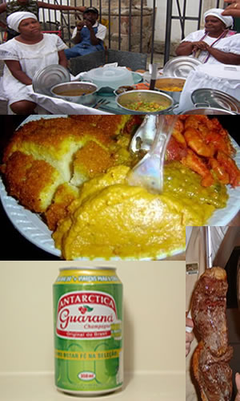

Cuisine |
|---|
|
|---|
| Home |
|---|
| History of Brazil |
| Cuisine |
| Jiu-jitsu |
| Capoeira |
| Samba |
| Brazilian Grocery |
| Las Vegas Locals |


In Las vegas there are various restaurants and places to sample Brazilian cuisine. The most popular Brazilian cuisine in the U.S. is the churrascaria. This is a barbaque that is cooked over an open fire. You can find Brazilian Cuisine at: Yolie's Brazilian Steakhouse & Seafood 3900 Paradise Rd Ste Z Samba Brazilian Steakhouse |
 |
| Tidbits |
|---|
In Brazil you will find different foods in different places depending on local culture. For example, you won't find authentic acarje anywhere except for the Bahia. |